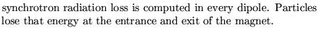
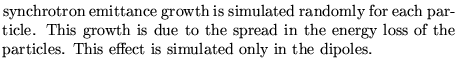
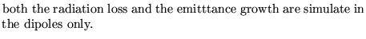
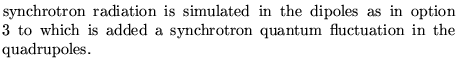
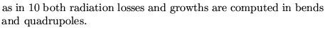
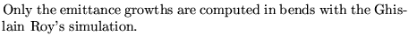
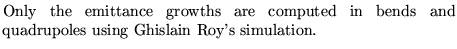
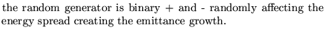
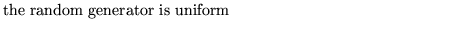
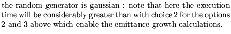

Input formatParameter definitions
SYNChrotron radiation.....(maximum 80 characters)
Energy option randomoption,
Energy Initial nominal energy in GeV
option option deciding on type of simulation.
0 
1 
2 
3 
4
5 
10 
11 
12 
13 
randomoption 
1 
2 
3 
11,12,13  Examples
Examples
The examples given come from demo7.
SYNCHROTRON RADIATION DEFINITION 50 1 3, *SYNCHROTRON RADIATION DEFINITION *50 3 3,